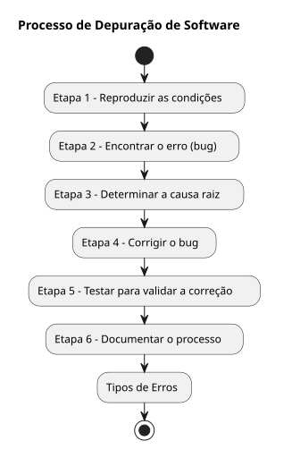
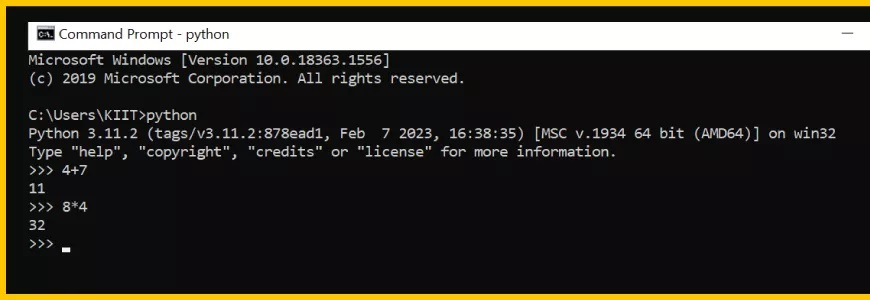
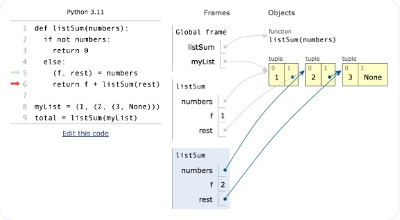
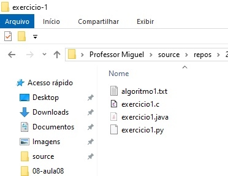
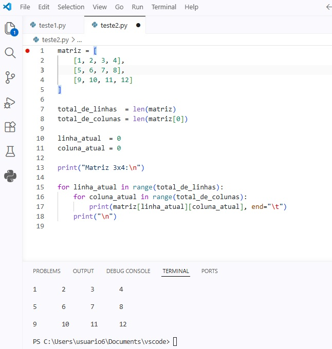
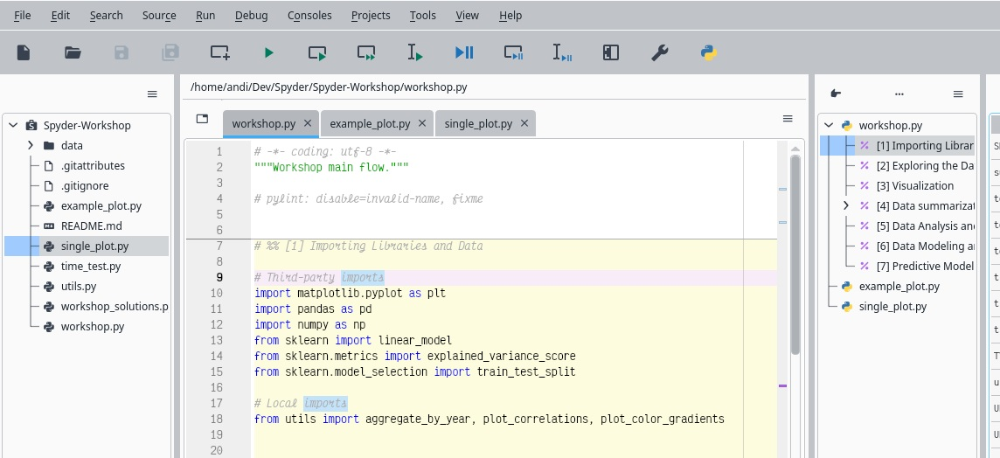

Aula 8 Depuração e Teste de Algorimos
“escrever código corresponde a 90% de programação; o debugging do código representa os outros 90%” FURTADO, A. L. Python: Programação para Leigos. Rio de Janeiro: Alta Books, 2021. Capítulo 10
8.1 O que é Depuração de Código (DEBUGGING)
8.1.1 Definição: Depuração é o processo de encontrar, isolar e resolver erros de codificação conhecidos como bugs em programas de software. A depuração ajuda a descobrir a causa de erros de codificação, evitar problemas de função do software e melhorar o desempenho geral do software. Camilo Quiroz-Vázquez

Compreender as diferentes categorias de falhas que podem ocorrer em um sistema ajuda engenheiros e desenvolvedores a escolherem a estratégia mais adequada para corrigir problemas no código sempre que um erro aparece. Entre essas situações, destacam-se alguns tipos comuns de erros que demandam atividades de depuração:
8.2 Tipos de Erros a depurar em um programa
8.2.1 Erros semânticos
Erro semântico ocorre quando o computador entende o código, mas o significado do que foi escrito não corresponde ao que o programador pretendia. O código está sintaticamente correto, mas o significado da instrução está errado dentro do contexto do problema.
Saída
25258.3 Ferramentas de Depuração
8.3.1 Ambientes de desenvolvimento integrados (IDEs)
Uma IDE (Integrated Development Environment — Ambiente de Desenvolvimento Integrado) é um software que reúne, em um único lugar, todas as ferramentas necessárias para desenvolver programas. Em vez de usar vários programas separados (editor, compilador, depurador), a IDE integra tudo em uma única interface.
8.3.2 Antes: SEM UTILIZAR IDEs
| Editor de código | Notepad++ | |
| Executor/Compilador | Python.exe ( “MS-DOS”) |  |
| Depurador (Debugger) | PYTHON TUTOR (WEB) |  |
| Gerenciador de projeto (Arquivos) | windows explorer |  |
8.3.3 Agora: UTILIZANDO IDEs
|
 |
8.3.3.1 Exemplos de IDEs para linguagem Python:
| Microsoft VSCODE | |
| Microsoft Visual Studio 2022 | |
| Spyder |  |
8.4 Depurando na I.D.E.
- Breakpoints (Pontos de Parada)
Interrompem a execução do código em uma linha específica para examinar o estado das variáveis.- Step-By-Step (Passo-a-Passo)
Executar linha por linha (Step Into, Step Over, Step Out) para rastrear o fluxo lógico.Exemplo no Microsoft VSCode
Você deseja monitorar a execução do seguinte código passo-a-passo:
print("linha 1")
print("linha 2")
print("linha 3")
print("linha 4")
print("linha 5")
print("linha 6")
print("linha 7")
print("linha 8")
print("linha 9")
print("linha 10")
variavel1 = 3;
variavel2 = 11;

8.4.2 Executando o código depurando no VSCode (DEBUGGING):
- passo - Colocando um BreakPoint

- passo - Inicializando a depuração

- passo - Selecionando o depurador padrão do Python

- passo - Avisando que você vai depurar um arquivo comum

- passo - Fazendo e execução passo-a-passo (Step By Step) - Tecla de atalho F10

- passo - Fazendo e execução passo-a-passo (Step By Step) - Tecla de atalho F10

- passo - Cada vez que você pressionar F11, vai a próxima linha. Caso exista uma função, você não irá entrar dentro dela.

- passo - Ao encontrar uma variável, podemos inspecionar seu conteúdo. Passe o mouse acima do nome da variável e com o botão do mouse, selecione a opção “add Watch”.

A Variável selecionada, passa a aparecer na área da visualização (quadrinho watch).

Para toda variável de interesse, você pode adicioná-la da tela de exibição repetindo o processo.

Se precisar sair do programa, basta pressionar SHIFT+F5;

8.5 REFERÊNCIAS:
Quiroz-Vázquez, Camilo - IBM. Debugging: o que é e como funciona. [S.l.: s.n.], [s.d.]. Disponível em: https://www.ibm.com/br-pt/think/topics/debugging. Acesso em: 22 abr. 2026. FURTADO, A. L. Python: Programação para Leigos. Rio de Janeiro: Alta Books, 2021. Capítulo 10
8.6 Exercícios de Depuração e Teste de Algorimos
8.6.1 Exemplo 1 -
Depure em uma tabela o programa a seguir:
- mostre a evolução das variáveis de posição ou contagem (total_de_elementos e posicao_atual);
- mostre a saída de do programa em em toda evolução do laço FOR
dias_semana = [ "Segunda-feira", "Terça-feira", "Quarta-feira", "Quinta-feira", "Sexta-feira", "Sábado", "Domingo" ]
total_de_elementos = len(dias_semana)
posicao_atual = 0
print("Dias da semana:\n")
for ( posicao_atual ) in range( total_de_elementos ):
print( dias_semana[posicao_atual] )Depuração manual
+-----------+----------------------+------------------+------------------+
| Iteração | total_de_elementos | posicao_atual | Valor Acessado |
+-----------+----------------------+------------------+------------------+
| Inicial | 7 | 0 | - |
+-----------+----------------------+------------------+------------------+
| 1 | 7 | 0 | Segunda-feira |
| 2 | 7 | 1 | Terça-feira |
| 3 | 7 | 2 | Quarta-feira |
| 4 | 7 | 3 | Quinta-feira |
| 5 | 7 | 4 | Sexta-feira |
| 6 | 7 | 5 | Sábado |
| 7 | 7 | 6 | Domingo |
+-----------+----------------------+------------------+------------------+8.6.2 Exemplo 2 -
Implemente um programa em Python que: - Crie uma matriz bidimensional (lista de listas) com 3 linhas e 4 colunas, contendo valores inteiros sequenciais (por exemplo: de 1 a 12). - Utilize estruturas de repetição (for) para percorrer todos os elementos da matriz. - Exiba os valores da matriz organizados em formato tabular (3x4), respeitando linhas e colunas.
matriz = [
[1, 2, 3, 4],
[5, 6, 7, 8],
[9, 10, 11, 12]
]
total_de_linhas = len(matriz)
total_de_colunas = len(matriz[0])
linha_atual = 0
coluna_atual = 0
print("Matriz 3x4:\n")
for linha_atual in range(total_de_linhas):
for coluna_atual in range(total_de_colunas):
print(matriz[linha_atual][coluna_atual], end="\t")
print("\n")Depuração manual
+----------+--------+---------+-------+--------+----------------+
| Iteração | total | total | linha | coluna | Valor Impresso |
| | linhas | colunas | atual | atual | |
+----------+--------+---------+-------+--------+----------------+
| Inicio | 3 | 4 | 0 | 0 | -- |
+----------+--------+---------+-------+--------+----------------+
| 1 | 3 | 4 | 0 | 0 | 1 |
+----------+--------+---------+-------+--------+----------------+
| 2 | 3 | 4 | 0 | 1 | 2 |
+----------+--------+---------+-------+--------+----------------+
| 3 | 3 | 4 | 0 | 2 | 3 |
+----------+--------+---------+-------+--------+----------------+
| 4 | 3 | 4 | 0 | 3 | 4 |
+----------+--------+---------+-------+--------+----------------+
| 5 | 3 | 4 | 1 | 0 | 5 |
+----------+--------+---------+-------+--------+----------------+
| 6 | 3 | 4 | 1 | 1 | 6 |
+----------+--------+---------+-------+--------+----------------+
| 7 | 3 | 4 | 1 | 2 | 7 |
+----------+--------+---------+-------+--------+----------------+
| 8 | 3 | 4 | 1 | 3 | 8 |
+----------+--------+---------+-------+--------+----------------+
| 9 | 3 | 4 | 2 | 0 | 9 |
+----------+--------+---------+-------+--------+----------------+
| 10 | 3 | 4 | 2 | 1 | 10 |
+----------+--------+---------+-------+--------+----------------+
| 11 | 3 | 4 | 2 | 2 | 11 |
+----------+--------+---------+-------+--------+----------------+
| 12 | 3 | 4 | 2 | 3 | 12 |
+----------+--------+---------+-------+--------+----------------+Exercício 1 -
Considere o modelo apresentado em aula para percorrer uma lista utilizando índice.
Agora, elabore um programa em Python que:
- Crie uma lista chamada estados_brasil contendo as 27 siglas das unidades federativas do Brasil: AC, AL, AP, AM, BA, CE, DF, ES, GO, MA, MT, MS, MG, PA, PB, PR, PE, PI, RJ, RN, RS, RO, RR, SC, SP, SE, TO
- Calcule o total de elementos da lista utilizando a função len().
- Utilize uma variável de controle chamada posicao_atual, iniciando com valor 0.
- Utilize uma estrutura de repetição while para percorrer a lista.
- Imprima cada sigla em uma linha.
estados_brasil = [
"AC", "AL", "AP", "AM", "BA", "CE", "DF", "ES", "GO",
"MA", "MT", "MS", "MG", "PA", "PB", "PR", "PE", "PI",
"RJ", "RN", "RS", "RO", "RR", "SC", "SP", "SE", "TO"
]
_________________ = len(__________________)
_________________ = 0
print("_____________________")
while _______________ < _________________ :
print( _________________[_______________])
_____________ = ___________________ + 1
8.6.3 Respostas
8.6.3.1 Exercício 1
estados_brasil = [
"AC", "AL", "AP", "AM", "BA", "CE", "DF", "ES", "GO",
"MA", "MT", "MS", "MG", "PA", "PB", "PR", "PE", "PI",
"RJ", "RN", "RS", "RO", "RR", "SC", "SP", "SE", "TO"
]
total_de_elementos = len(estados_brasil)
posicao_atual = 0
print("Estados do Brasil:\n")
while posicao_atual < total_de_elementos:
print(estados_brasil[posicao_atual])
posicao_atual = posicao_atual + 1
+----------+-----------+---------+----------------+
| Iteração | total | Posicao | Valor Impresso |
| | elementos | atual | |
+----------+-----------+---------+----------------+
| Inicio | C | 0 | -- |
+----------+-----------+---------+----------------+
| 1 | 27 | 1 | AC |
+----------+-----------+---------+----------------+
| 2 | 27 | 2 | AL |
+----------+-----------+---------+----------------+
| 3 | 27 | 3 | AP |
+----------+-----------+---------+----------------+
| 4 | 27 | 4 | AM |
+----------+-----------+---------+----------------+
| 5 | 27 | 5 | BA |
+----------+-----------+---------+----------------+
| 6 | 27 | 6 | CE |
+----------+-----------+---------+----------------+
| 7 | 27 | 7 | DF |
+----------+-----------+---------+----------------+
| 8 | 27 | 8 | ES |
+----------+-----------+---------+----------------+
| 9 | 27 | 9 | GO |
+----------+-----------+---------+----------------+
| 10 | 27 | 10 | MA |
+----------+-----------+---------+----------------+
| 11 | 27 | 11 | MT |
+----------+-----------+---------+----------------+
| 12 | 27 | 12 | MS |
+----------+-----------+---------+----------------+
| 13 | 27 | 13 | MG |
+----------+-----------+---------+----------------+
| 14 | 27 | 14 | PA |
+----------+-----------+---------+----------------+
| 15 | 27 | 15 | PB |
+----------+-----------+---------+----------------+
| 16 | 27 | 16 | PR |
+----------+-----------+---------+----------------+
| 17 | 27 | 17 | PE |
+----------+-----------+---------+----------------+
| 18 | 27 | 18 | PI |
+----------+-----------+---------+----------------+
| 19 | 27 | 19 | RJ |
+----------+-----------+---------+----------------+
| 20 | 27 | 20 | RN |
+----------+-----------+---------+----------------+
| 21 | 27 | 21 | RS |
+----------+-----------+---------+----------------+
| 22 | 27 | 22 | RO |
+----------+-----------+---------+----------------+
| 23 | 27 | 23 | RR |
+----------+-----------+---------+----------------+
| 24 | 27 | 24 | SC |
+----------+-----------+---------+----------------+
| 25 | 27 | 25 | SP |
+----------+-----------+---------+----------------+
| 26 | 27 | 26 | SE |
+----------+-----------+---------+----------------+
| 27 | 27 | 27 | TO |
+----------+-----------+---------+----------------+